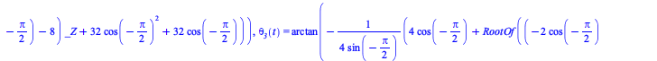
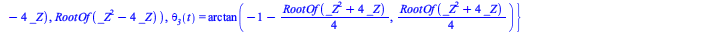
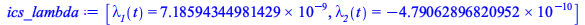

Numerical solution Index Reduction
| > | sol_kine := solve(Phi,{theta__2(t),theta__3(t)}):
s__2(t) = 0,s__3(t) = 0,theta__1(t)=-Pi/2; ics_p := {%} union subs( %, data, sol_kine ); |
 |
(6.1.1) |
| > | [s__2(t) = 0, diff(s__2(t),t) = 0,s__3(t) = 0,diff(s__3(t),t) = 0,theta__1(t)=-Pi/2,diff(theta__1(t),t) = 0];
|
| (6.1.2) |
Initial conditions for the dae dynamical system
| > | ics_v := {%[2],%[4],%[6]} union subs( %, data, diff(sol_kine,t) );
ics := ics_p union ics_v; |
 |
(6.1.3) |
| > | Phi_tt := diff(Phi,t,t); |
| (6.1.4) |
| > | sys_indexred := [op(convert(ode_sys,list)),op(Phi_tt)]: <%> |
| (6.1.5) |
| > | MM, bb := GenerateMatrix( sys_indexred,[op(diff(q_vars,t,t)),lambda__1(t),lambda__2(t)]); |
| (6.1.6) |
| > | evalf(subs(ics, data, t=0, MM)):
evalf(subs(ics, data, t=0, bb)): tmp:= LinearSolve(%%,%); |
| (6.1.7) |
| > | <[op(diff(q_vars,t,t)),lambda__1(t),lambda__1(t)]> = tmp;
ics_lambda := [lambda__1(t) = tmp[6],lambda__2(t) = tmp[7]]; |
|  | (6.1.8) |
System of DAE equations
| > | dae_sys := convert(subs(data,[op(convert(ode_sys,list)),op(Phi)]),set): <op(%)>;
full_ics := subs( t = 0, convert(convert(ics,set) union {ics_lambda[1]} union {ics_lambda[2]}, D)); |
| (6.1.9) |
| > | sol_dae := dsolve(convert(dae_sys,set) union full_ics,numeric,implicit=true,maxfun=300000); |
| (6.1.10) |